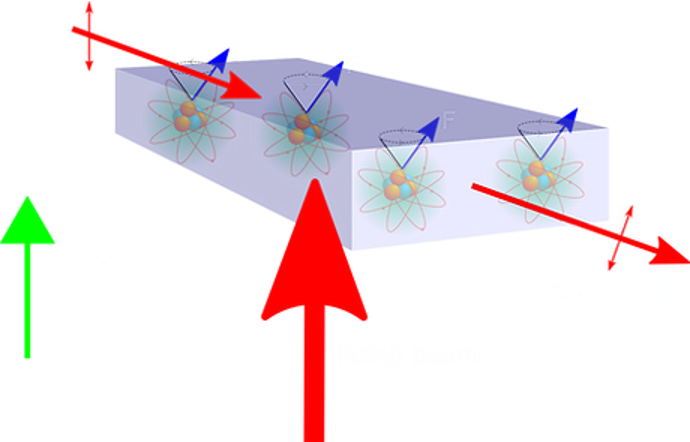
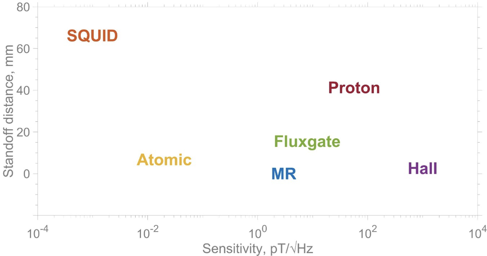

Atomic magnetometry · A*STAR Q.InC
QEP 2.0 Atomic Magnetometer
Building a scalar atomic magnetometer capable of femtotesla-sensitive measurement.

Project Abstract
At A*STAR Q.InC, I built and tested a prototypical scalar atomic magnetometer, reaching a measured sensitivity as low as 24 fT/√Hz while detecting a 10 μT test field. At geomagnetic field strengths, this corresponds to sensitivity near one part per billion per √Hz. The sensor uses potassium vapour in a thermal cell and measures atomic spin precession through the rotation of a linearly polarised probe beam. We estimate a theoretical maximum sensitivity below 1 fT/√Hz. Potential applications include geomagnetic surveys, fundamental physics, nuclear magnetic resonance (NMR), magnetic resonance imaging (MRI), and nuclear quadrupole resonance (NQR), among others.
Background And Motivation
Atomic magnetometers are quantum devices designed to make sensitive measurements of magnetic fields. They are competitive with standard commercial sensors and offer advantages over other emerging magnetometer architectures, including relative simplicity and the ability to operate near room temperature, unlike cryogenically cooled sensors such as SQUIDs.
This project aimed to demonstrate that A*STAR has the expertise and industry connections to reproduce next-generation atomic-vapour-cell magnetometers being researched and manufactured at international institutions. Following validation, Singapore has developed multiple related magnetometry projects and is working to implement a refined, scaled-down atomic magnetometer designed for portable, robust use beyond the ideal laboratory environment.
Potential applications include magnetoencephalography (MEG) for diagnosing neurological disease and supporting thought-to-speech systems for people with speech impairments; geomagnetic surveys; fundamental physics, including searches for hypothetical particles and precision measurements of constants; nuclear magnetic resonance (NMR); magnetic resonance imaging (MRI); nuclear quadrupole resonance (NQR); vapour-cell quantum memory; GPS-denied navigation; and more.


Results And Next Steps
The figure below shows magnetic spectral density versus lock-in frequency. It represents our sensitivity to magnetic-field fluctuations at each frequency while detecting a test magnetic field set to 10 μT. The on- and off-resonance measurements help distinguish noise contributions from calibration and other technical sources. Our best measured sensitivity was approximately 24 fT/√Hz near 1 kHz. Sensitivity was lower at low frequencies, at about 8.5 × 10³ fT/√Hz at 1 Hz. Above 1 kHz, noise and filtering prevented reliable measurements of the true sensitivity.
We believe the achievable sensitivity is closer to the theoretically predicted optimum of less than 1 fT/√Hz, but calibration errors and noisy electronics limited our ability to validate that estimate. At low frequencies, noise from the current source that sets our nominally stable test reference remains a key limitation. We separately measured its current spectral density as 75 nA/√Hz at 1 Hz, compared with a target below 0.4 nA/√Hz. This suggests that a significant portion of the 1/f noise comes from the current source. Thermal fluctuations may also produce substantial 1/f noise through convective currents.
Next steps include a quieter, thermally stable current source; gradiometric measurements to reduce common-mode 1/f noise; digital signal processing to address aliasing; and larger probe beams with optimized detuning. The first proposal is explored in the Low Noise Electronics for Magnetometry project.

Methodology

Optical Paths And Sensor
Pump laser: the beam is routed by mirrors through an isolator and wave plates, then sent horizontally through the cell. The wave plates prepare the light's polarisation as circular for optical pumping of the potassium atoms. The isolator reduces back-reflections into the laser.
Probe laser: the probe is prepared with linear polarisation and travels through an isolator and polarisation-maintaining fibre (PMF). The PMF carries the probe to the upper optical stage and helps clean up the laser mode. The probe then crosses the cell perpendicular to the pump beam; this perpendicular direction is the +x direction. Its polarisation rotates slightly as it passes through the spin-polarised vapour, providing the magnetic-field signal.
Vapour cell: potassium atoms in the heated cell acquire a collective spin from the pump beam. The probe measures changes in that spin polarisation.
Magnetic shield: the enclosure suppresses ambient magnetic fields and interference, allowing the controlled field and the cell's response to be measured more reliably.
Field Control And Readout
XYZ coils: arranged in a Helmholtz geometry, these coils apply fields along the three axes. The bias field is the test field being measured and is driven by the current source. The y-coil also receives an RF drive, producing a smaller RF magnetic field that excites the atomic spin response. The coils can also apply small bias fields to compensate for residual static fields that are not sufficiently suppressed by the shields.
Balanced photodetector (PDB): a polarising beam splitter separates the probe's orthogonal polarisation components, which are detected by two photodiodes. Their difference signal measures the small polarisation rotation.
Lock-in amplifier: it extracts the response at the RF-drive frequency and rejects unrelated noise. Its reference input is the same RF drive applied to the y-coils.
RF drive and current source: the RF drive supplies the oscillating coil current, while a Twinleaf CBSA250 current source supplies the static bias current. Their stability and noise directly affect the measured sensitivity.
In practice, the magnetic shield is degaussed, and the coil currents and lock-in gain are set before measuring the probe signal over frequency. The system is tuned to optimize laser power, polarisation, alignment, detuning, and other parameters for improved sensitivity.
Citations
A*STAR Q.InC sensing research: Q.InC sensing research ↗. Project poster: M. Zirdi Syukur, Md. Danial Afiq, and Junyi Lee.
Apparatus And Results
Photographs and noise measurements from the project poster.